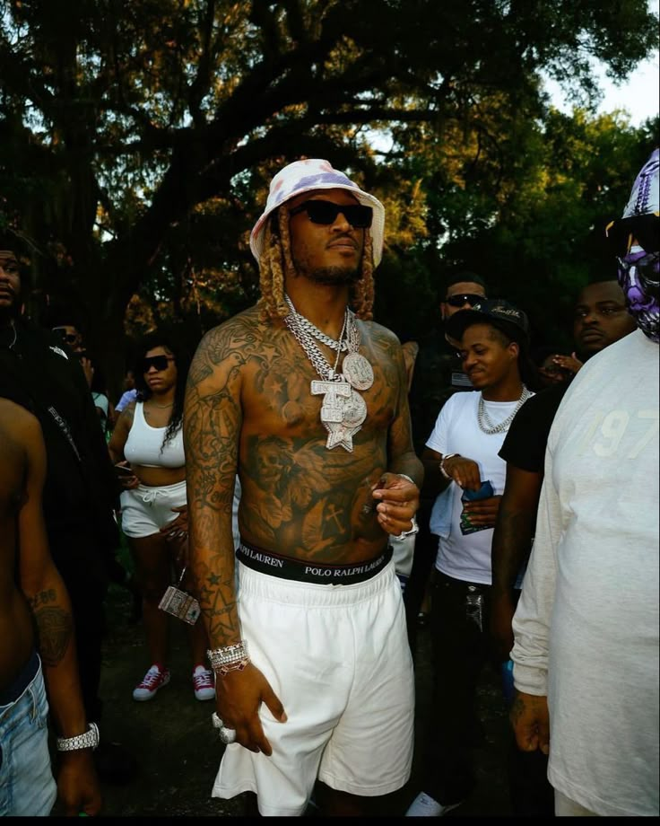

Future
Future, vlastným menom Nayvadius DeMun Wilburn, je americký rapper, producent a skladateľ, ktorý je považovaný za jedného z najvplyvnejších a najinovatívnejších umelcov v súčasnej hip-hopovej a trapovej hudbe. Narodil sa 20. novembra 1983 v Atlante, Georgia. Future sa do povedomia verejnosti dostal v polovici 2000-tych rokov, ale skutočný prelom nastal v roku 2012, keď vydal svoj album Pluto, ktorý obsahoval hity ako „Turn On The Lights“ a „Magic“. Tieto skladby odhalili jeho charakteristický zvuk, ktorý sa neskôr stal synonymom pre moderný trap a vplyvný v širšom rapovom svete. Jeho produkcia je známa pre bohaté, syntetizované beaty, využívanie autotune (ktorý Future dokonale integruje do svojho zvuku) a emotívne texty o živote, láske, vzťahoch, drogách a problémoch, ktoré prežíva. Jedným z najväčších zlomov v jeho kariére bol album DS2 (2015), ktorý sa považuje za jeden z najlepších trapových albumov všetkých čias. DS2 obsahuje hity ako „Commas“ a „Where Ya At“, ktoré ukazujú Futureovu schopnosť kombinovať introspektívne témy s masívnymi, energickými beatmi. Tento album posilnil jeho status jedného z najväčších raperov súčasnosti. V roku 2016 Future vydal dva albumy – EVOL a Future, pričom obidva zaznamenali komerčný úspech. Skladby ako „Low Life" (s The Weekndom) sa stali obrovskými hitmi a vylepšili jeho reputáciu v hudobnom svete. Album Hndrxx (2017) bol ďalším experimentom, kde Future prepojil trap s R&B a popovými prvkami, čo sa stalo opäť veľmi úspešné. Tento album ukázal jeho schopnosť prispôsobiť sa rôznym hudobným žánrom, pričom zostal verný svojmu štýlu.
Späť na hlavnú stránku